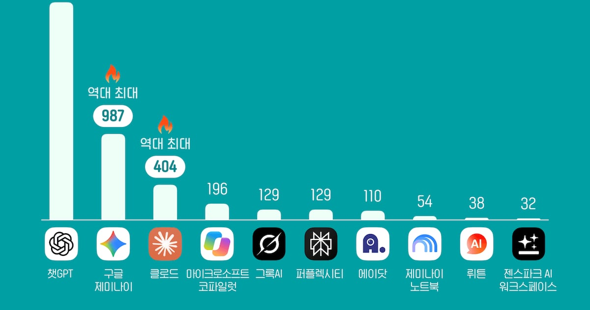
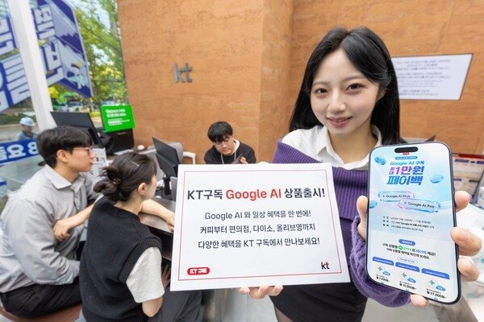

01 · KR
LG CNS × Claude
파트너 등급을 기업용 실행력으로 전환
Claude 파트너 네트워크의 ‘프리퍼드’ 등급과 전문가·구축 사례를 바탕으로 기업용 AI 도입을 확장한다.
원문 보기 ↗ADDIT INSIGHT
도입·운영·변경을 책임질 파트너 체계를 함께 설계한다.
파트너십·데이터·보안·유통이 AI 운영의 다음 기준이 됩니다.
파트너십·공공데이터·사용자 확산·보안이 하나의 운영 과제가 됩니다.
AI 파트너십은 모델 도입에서 업무 시스템 통합으로 넓어진다.
비공개 데이터는 로그인보다 접근 경계와 다운로드 통제가 좌우한다.
보안은 모델에서 연결된 업무·생활 기기까지 확장된다.
사용량이 커질수록 신뢰·검증 기준이 경쟁력이 된다.
AI 경쟁은 모델 성능과 함께 유통·구독 설계로 이동한다.
파트너 등급을 기업용 실행력으로 전환
Claude 파트너 네트워크의 ‘프리퍼드’ 등급과 전문가·구축 사례를 바탕으로 기업용 AI 도입을 확장한다.
원문 보기 ↗도입·운영·변경을 책임질 파트너 체계를 함께 설계한다.
비공개 데이터 접근 경계의 시험대
국정감사에서 2,672건 문서가 별도 로그인·비밀번호 없이 내려받을 수 있었다는 지적이 나왔다. 실제 제3자 열람 여부는 확인되지 않았다.
원문 보기 ↗검색·열람·다운로드 권한과 로그를 한 화면에서 점검한다.

사용량이 만든 신뢰의 다음 기준
와이즈앱·리테일 인용 보도에 따르면 9월 국내 ChatGPT 월간 활성 이용자는 2,470만명으로 집계됐다.
원문 보기 ↗이용자 수와 함께 오류·민감정보·검증 경험을 측정한다.

Gemini를 생활 혜택과 묶은 구독 설계
KT는 Gemini 접근을 포함한 8개 상품을 3개 단독 요금제와 5개 생활 혜택 번들로 구성했다.
원문 보기 ↗AI 유통은 기능보다 사용 빈도와 결제 이유를 설계한다.
신뢰 파트너부터 여는 보안 모델
Fairwind 프로그램을 통해 일부 사이버보안 전문가에게 먼저 제공하고, 이후 개발자·기업·일반 이용자로 확대할 계획이다.
원문 보기 ↗공개 범위보다 승인 조건·목적·오남용 방지를 먼저 정의한다.